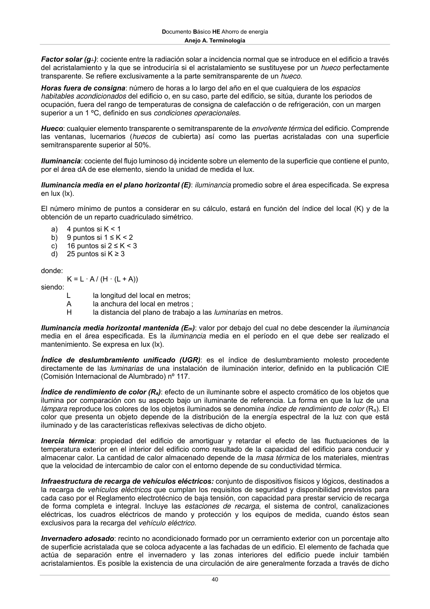

DB-HE · Anejo A. Terminología · versión 2022-06-14 · capa oficial
Formatos: JSON compacto · Markdown · PDF fuente
Ámbito del documento · texto del ámbito · documento y tablas
ID técnico a0073 · PDF pág. 39-42 · jerarquía no validada por persona · contrastado con el literal de la página 39 (candidato tipográfico); no validado por persona · padre: raíz
Anejo A. Terminología 39 La energía primaria (total) puede descomponerse en energía primariaprocedente de fuentes renovables, o energía primaria renovable, y en energía primaria procedente de fuentes no renovables, o energía primaria no renovable, de acuerdo con la Directiva de Energías Renovables (2009/28/CE). De forma simplificada, la relación entre energía final y primaria se puede expresar con un coeficiente de paso, que refleja, para una zona geográfica determinada, el efecto de las pérdidas en transformación y transporte en cada una de las partes de la energía primaria (renovable y no renovable) de cada vector energético. Energía procedente de fuentes renovables: energía procedente de fuentes renovables no fósiles, es decir, energía eólica, solar, aerotérmica, geotérmica, hidrotérmica y oceánica, hidráulica, biomasa, gases de vertedero, gases de plantas de depuración y biogás. Debe tenerse en cuenta que no toda la energía generada a partir de fuentes renovables puede ser considerada renovable. La energía generada a partir de fuentes renovables puede tener, en algunos casos, un componente de energía no renovable que debe ser tratado como tal en el cálculo energético. Envolvente (térmica): ver Anejo C Equipo auxiliar: equipos eléctricos o electrónicos asociados a la lámpara, diferentes para cada tipo de lámpara, cuya función es el encendido y control de las condiciones de funcionamiento. Estos equipos auxiliares, salvo cuando son electrónicos, están formados por combinación de arrancador/cebador, balasto y condensador. Espacio habitable: espacio formado por uno o varios recintos habitables contiguos con el mismo uso y condiciones térmicas equivalentes agrupados a efectos de cálculo energético. En función de su carga interna, un espacio habitable se clasifica como espacio habitable de carga interna baja, carga interna media, carga interna alta o carga interna muy alta de acuerdo con la tabla a-Anejo A. Espacio habitable acondicionado: espacio habitable que necesita mantener unas determinadas condiciones operacionales para el bienestar térmico de sus ocupantes. En uso residencial privado, todos los espacios interiores de las viviendas se consideran acondicionados y deben cumplir las condiciones operacionales de acuerdo al Anejo D. A efectos de cálculo, de forma simplificada, pueden considerarse igualmente acondicionados otros espacios habitables, como pasillos, escaleras y otras zonas comunes. Espacio habitable no acondicionado: espacio habitable para el que se prevé que, durante la vida útil del edificio, no va a necesitar mantener unas determinadas condiciones de temperatura para el bienestar térmico de sus ocupantes. Al ser un espacio habitable dispone, sin embargo, de fuentes internas (iluminación, ocupación y equipos). Espacio no habitable: espacio formado por uno o varios recintos no habitables contiguos con el mismo uso y condiciones térmicas equivalentes, agrupados a efectos de cálculo de la demanda energética. En esta categoría se consideran los garajes, aparcamientos, trasteros, cuartos de basuras e instalaciones (ver recintos habitables). Estación de recarga: conjunto de elementos necesarios para efectuar la conexión del vehículo eléctrico a la instalación eléctrica fija necesaria para su recarga. Las estaciones de recarga se clasifican como: 1. Punto de recarga simple, compuesto por las protecciones necesarias, una o varias bases de toma de corriente no específicas para el vehículo eléctrico y, en su caso, la envolvente. 2. Punto de recarga tipo SAVE (Sistema de alimentación específico del vehículo eléctrico). Fachada: cerramiento en contacto con el aire exterior cuya inclinación es superior a 60º respecto al plano horizontal. Está compuesto de una parte opaca (muro) y otra semitransparente (huecos). Factor de mantenimiento (Fm): cociente entre la iluminancia media sobre el plano de trabajo después de un cierto periodo de uso de una instalación de alumbrado y la iluminancia media obtenida bajo la misma condición para la instalación considerada como nueva. Factor de sombra (Fs): fracción de la radiación incidente en un hueco que no es bloqueada por la presencia de obstáculos de fachada, tales como: retranqueos, voladizos, toldos, salientes laterales u otros. Documento Básico HE Ahorro de energía Anejo A. Terminología 40 Factor solar (g┴): cociente entre la radiación solar a incidencia normal que se introduce en el edificio a través del acristalamiento y la que se introduciría si el acristalamiento se sustituyese por un hueco perfectamente transparente. Se refiere exclusivamente a la parte semitransparente de un hueco. Horas fuera de consigna: número de horas a lo largo del año en el que cualquiera de los espacios habitables acondicionados del edificio o, en su caso, parte del edificio, se sitúa, durante los periodos de ocupación, fuera del rango de temperaturas de consigna de calefacción o de refrigeración, con un margen superior a un 1 ºC, definido en sus condiciones operacionales. Hueco: cualquier elemento transparente o semitransparente de la envolvente térmica del edificio. Comprende las ventanas, lucernarios (huecos de cubierta) así como las puertas acristaladas con una superficie semitransparente superior al 50%. Iluminancia: cociente del flujo luminoso d incidente sobre un elemento de la superficie que contiene el punto, por el área dA de ese elemento, siendo la unidad de medida el lux. Iluminancia media en el plano horizontal (E): iluminancia promedio sobre el área especificada. Se expresa en lux (lx). El número mínimo de puntos a considerar en su cálculo, estará en función del índice del local (K) y de la obtención de un reparto cuadriculado simétrico. a) 4 puntos si K < 1 b) 9 puntos si 1 ≤ K < 2 c) 16 puntos si 2 ≤ K < 3 d) 25 puntos si K ≥ 3 donde: K = L · A / (H · (L + A)) siendo: L la longitud del local en metros; A la anchura del local en metros ; H la distancia del plano de trabajo a las luminarias en metros. Iluminancia media horizontal mantenida (Em): valor por debajo del cual no debe descender la iluminancia media en el área especificada. Es la iluminancia media en el período en el que debe ser realizado el mantenimiento. Se expresa en lux (lx). Índice de deslumbramiento unificado (UGR): es el índice de deslumbramiento molesto procedente directamente de las luminarias de una instalación de iluminación interior, definido en la publicación CIE (Comisión Internacional de Alumbrado) nº 117. Índice de rendimiento de color (Ra): efecto de un iluminante sobre el aspecto cromático de los objetos que ilumina por comparación con su aspecto bajo un iluminante de referencia. La forma en que la luz de una lámpara reproduce los colores de los objetos iluminados se denomina índice de rendimiento de color (Ra). El color que presenta un objeto depende de la distribución de la energía espectral de la luz con que está iluminado y de las características reflexivas selectivas de dicho objeto. Inercia térmica: propiedad del edificio de amortiguar y retardar el efecto de las fluctuaciones de la temperatura exterior en el interior del edificio como resultado de la capacidad del edificio para conducir y almacenar calor. La cantidad de calor almacenado depende de la masa térmica de los materiales, mientras que la velocidad de intercambio de calor con el entorno depende de su conductividad térmica. Infraestructura de recarga de vehículos eléctricos: conjunto de dispositivos físicos y lógicos, destinados a la recarga de vehículos eléctricos que cumplan los requisitos de seguridad y disponibilidad previstos para cada caso por el Reglamento electrotécnico de baja tensión, con capacidad para prestar servicio de recarga de forma completa e integral. Incluye las estaciones de recarga, el sistema de control, canalizaciones eléctricas, los cuadros eléctricos de mando y protección y los equipos de medida, cuando éstos sean exclusivos para la recarga del vehículo eléctrico. Invernadero adosado: recinto no acondicionado formado por un cerramiento exterior con un porcentaje alto de superficie acristalada que se coloca adyacente a las fachadas de un edificio. El elemento de fachada que actúa de separación entre el invernadero y las zonas interiores del edificio puede incluir también acristalamientos. Es posible la existencia de una circulación de aire generalmente forzada a través de dicho Documento Básico HE Ahorro de energía Anejo A. Terminología 41 recinto, bien en forma de recirculación del aire interior o de precalentamiento de aire exterior que se usa para ventilación. A esta misma categoría pertenecen las galerías y los balcones acristalados. Lámpara: fuente construida para producir una radiación óptica, generalmente visible. Luminaria: aparato que distribuye, filtra o transforma la luz emitida por una o varias lámparas y que, además de los accesorios necesarios para fijarlas, protegerlas y conectarlas al circuito eléctrico de alimentación contiene, en su caso, los equipos auxiliares necesarios para su funcionamiento, definida y regulada en la norma UNE EN 60598-1:2015. Masa térmica: capacidad de los materiales de almacenar calor. La cantidad de calor almacenado depende de la densidad del material y su calor específico. Material: parte de un producto sin considerar su modo de entrega, forma y dimensiones, sin ningún revestimiento o recubrimiento. Medianería: cerramiento que linda con otro edificio ya construido o que se construya a la vez y que conforme una división común. Si el edificio se construye con posterioridad el cerramiento se considerará, a efectos térmicos, una fachada. Muro: cerramiento opaco en contacto con el aire exterior o con el terreno cuya inclinación es superior a 60º respecto al plano horizontal (ver Fachada). Muro parietodinámico: cerramiento que aprovecha la energía solar para el precalentamiento del aire exterior de ventilación. Generalmente está formado por una hoja interior de fábrica, una cámara de aire y una hoja exterior acristalada o metálica que absorbe la radiación solar. La circulación del aire puede ser natural (termosifón) o forzada. Muro Trombe: cerramiento que aprovecha la energía solar para el calentamiento por recirculación del aire interior del edificio. Generalmente está formado por una hoja interior de fábrica, una cámara de aire y un acristalamiento exterior. La circulación del aire puede ser natural (termosifón) o forzada. También se denomina muro solar ventilado. Partición interior: elemento constructivo del edificio que divide su interior en recintos independientes. Pueden ser verticales u horizontales (suelos y techos). En la intervención en edificios existentes, cuando un elemento de cerramiento separe una zona ampliada respecto a otra existente, se considerará perteneciente a la zona ampliada. Perfil de uso: descripción hora a hora, para un año tipo, de las cargas internas (carga sensible por ocupación, carga latente por ocupación, equipos, iluminación y ventilación). Periodo de utilización: tiempo característico de utilización de un espacio habitable o del edificio. A efectos de la definición de perfiles de uso se establecen periodos de utilización tipo de 8h, 12h, 16h y 24h. Para edificios de uso residencial privado se establece un periodo de utilización de 24h. Permeabilidad al aire: propiedad de una superficie (p.e., una ventana o puerta) de dejar pasar el aire cuando se encuentra sometida a una diferencia de presiones entre sus caras. La permeabilidad al aire se caracteriza por la capacidad de paso del aire, expresada en m3/h·m2, en función de la diferencia de presiones. Potencia a instalar: la potencia instalada se corresponderá con la potencia activa máxima que puede alcanzar una unidad de producción y vendrá determinada por la potencia menor de las especificadas en la placas de características de los grupos motor, turbina o alternador instalados en serie, o en su caso, cuando la instalación esté configurada por varios motores, turbinas o alternadores en paralelo será la menor de las sumas de las potencias de las placas de características de los motores, turbinas o alternadores que se encuentren en paralelo. En el caso de instalaciones fotovoltaicas la potencia instalada será la suma de las potencias máximas unitarias de los módulos fotovoltaicos que configuran dicha instalación, medidas en condiciones estándar según la norma UNE-EN 61215:2006 para módulos de silicio cristalino o la norma UNE-EN 61646:2009 para módulos de lámina delgada. Documento Básico HE Ahorro de energía

PDF fuente redistribuible: copia fiel enlazada en esta página (SHA256 verificado).